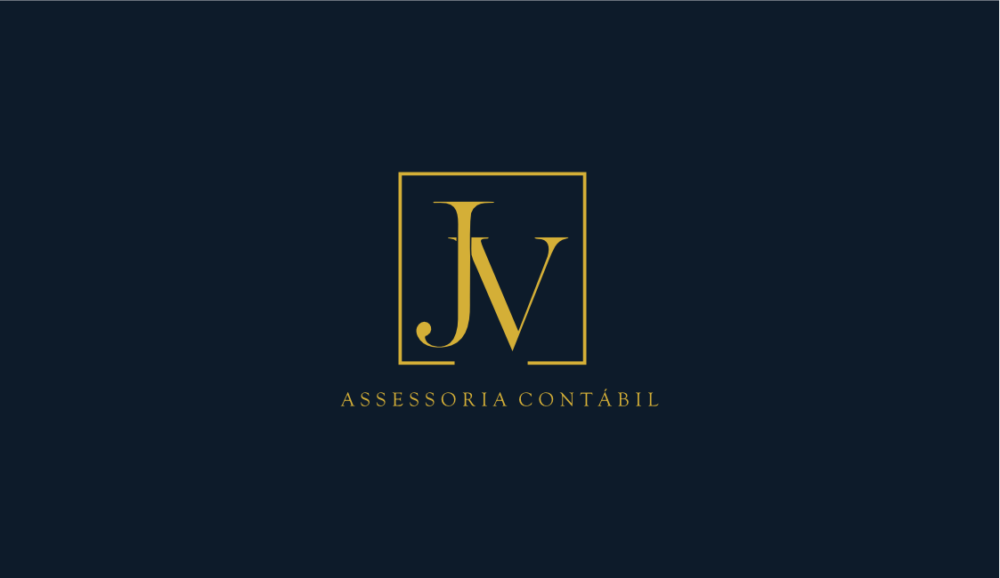
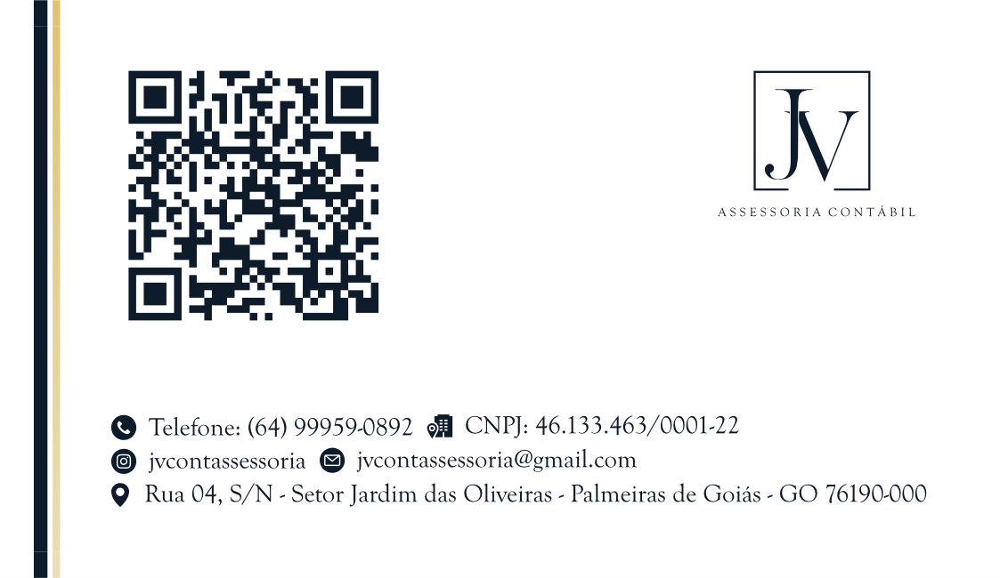

Contato


Fale com a
JV
Entre em contato com nossa equipe em
Palmeiras de Goiás.
Canais de atendimento
Conversar no WhatsApp
(64) 99959-0892
↗
Como chegar
Rua 04, S/N - Setor Jardim das Oliveiras
Palmeiras de Goiás - GO · CEP 76190-000
↗
Visitar o site
jvcontabilassessoria.com.br
↗
Acessar o Instagram
@jvcontassessoria
↗
 Contato
Contato